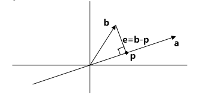
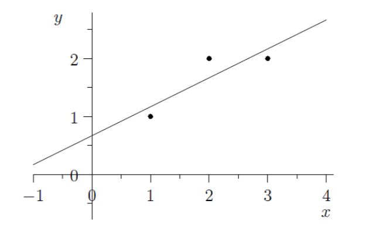

书接上回。
如何求解无解方程组？
在这个问题之前，我先做点铺垫。
正交向量
若两向量 \(\mathbf{a}, \mathbf{b}\) 正交，则必然有 \(\mathbf{a}^T\mathbf{b} = \mathbf{b}^T\mathbf{a} = 0\)
正交子空间
若子空间 \(S\) 与子空间 \(T\) 正交，则 \(S\) 中任意向量与 \(T\) 中任意向量正交。
不难发现，\(R(A)\) 与 \(N(A)\) 是正交的，而这两个空间恰好都是 \(R^n\) 的子空间，更巧的是，其维数之和为 \(n\)。
我们称这两个子空间为 \(R^n\) 的正交补——它们将 \(R^n\) 划分为了两个正交的子空间。
同样的，\(C(A)\) 与 \(L(A)\) 也互为正交补。
两个互为正交补的子空间的维数之和，不能超过原空间的维数。
投影问题
这一问题的几何解释为：如何在向量 \(\mathbf{a}\) 的方向上寻找与向量 \(\mathbf{b}\) 距离最近的一点。假设这一点对应的向量为 \(\mathbf{p}\)，则 \(\mathbf{e}=\mathbf{b}-\mathbf{p}\) 就是这一近似的误差。如图所示：

若令 \(\mathbf{p} = \hat{x}\mathbf{a}\)，因 \(\mathbf{e}\) 与 \(\mathbf{a}\) 正交，则有 \(\mathbf{a}^T(\mathbf{b}-\hat{x}\mathbf{a}) = 0\)，解得
\[ \hat{x} = \frac{\mathbf{a}^T\mathbf{b}}{\mathbf{a}^T\mathbf{a}} \\[2ex] \mathbf{p} = \mathbf{a}\frac{\mathbf{a}^T\mathbf{b}}{\mathbf{a}^T\mathbf{a}} \]
相当于把 \(\mathbf{b}\) 以某种操作投影到了 \(\mathbf{p}\) 上。若用投影矩阵 \(P\) 来描述这一操作，则有 \(\mathbf{p} = P\mathbf{b}\)，得
\[ P = \frac{\mathbf{a}\mathbf{a}^T}{\mathbf{a}^T\mathbf{a}} \]
这是一个对称矩阵（\(P^T=P\)），而且是幂等矩阵（\(P^2 = P\)）
如果考虑该问题在高维空间的版本
有一个向量空间 \(V\) 与一个不在该空间上的向量 \(\mathbf{b}\)，如果把 \(V\) 视为某一矩阵的列空间，且该空间的基为 \(\mathbf{a_1}, \mathbf{a_2},\dots, \mathbf{a_n}\)，则该矩阵可以用 \(A = \begin{bmatrix}\mathbf{a_1} & \mathbf{a_2} & \cdots & \mathbf{a_n} \end{bmatrix}\) 来描述。
令 \(\mathbf{p}\) 为 \(\mathbf{b}\) 在该向量空间上的投影，则 \(\mathbf{p}\) 可以用 \(\mathbf{p} = x_1\mathbf{a_1} + x_2\mathbf{a_2} + \dots + x_n\mathbf{a_n} = A\mathbf{\hat{x}}\) 来表示。
显然误差 \(\mathbf{e}\) 与整个向量空间正交，则有 \(\mathbf{a_1}^T\mathbf{e} = 0, \mathbf{a_2}^T\mathbf{e} = 0, \dots, \mathbf{a_n}^T\mathbf{e} = 0\)
上式可以写为 \(A^T\mathbf{e} = 0\)
从而得到 \[ A^T(\mathbf{b} - A\mathbf{\hat{x}}) = 0 \quad \Rightarrow \quad \mathbf{\hat{x}} = (A^TA)^{-1}A^T\mathbf{b} \] 那么得到一个非常优美的结论： \[ \mathbf{p} = A(A^TA)^{-1}A^T\mathbf{b} \\[2ex] P = A(A^TA)^{-1}A^T \] 这里的 \(P\) 同样满足对称性和幂等性。
这里 \(\mathbf{p} \in C(A)\)，同时惊喜的发现 \(\mathbf{e}\in L(A)\)，说明 \(\mathbf{b} = \mathbf{p} + \mathbf{e}\) 由两部分组成，一部分（\(\mathbf{p}\)）投影到了 \(C(A)\) 上，另一部分（\(\mathbf{e}\)）投影到了 \(L(A)\) 上。对于 \(\mathbf{e}\)，我们发现可以通过 \(\mathbf{e} = \mathbf{b} - \mathbf{p} = \mathbf{b} - P\mathbf{b} = (I-P)\mathbf{b}\) 表示，所以 \(I-P\) 也是个投影矩阵，也具有和 \(P\) 同样的性质。
当 \(A\) 的列向量线性无关时，说明 \(C(A)\) 就是 \(R^n\)，此时任意 \(\mathbf{b}\in R^n\) 都必然在 \(C(A)\) 中，投影矩阵就是 \(I\)。
对于 \(A^TA\) 而言，其零空间与 \(A\) 是一致的
- 对于 \(A^TA\mathbf{x}=\mathbf{0}\)，必然满足 \(\mathbf{x}^TA^TA\mathbf{x} = (A\mathbf{x})^T A\mathbf{x} = \mathbf{0}\)，从而 \(A\mathbf{x}\) 与自身正交，那么 \(A\mathbf{x} = \mathbf{0}\)。
- 对于 \(A\mathbf{x}=\mathbf{0}\)，必然满足 \(A^TA\mathbf{x}=\mathbf{0}\)
因此当 \(A\) 的列向量线性无关时，\(A\mathbf{x}=\mathbf{0}\) 只有零解，\(A^TA\mathbf{x}=\mathbf{0}\) 也只有零解。且 \(A^TA\) 为方阵，行列满秩，必然可逆。
回到最开始的问题：如何求解无解方程组？
这个问题看似很离谱，实则我们可以用一个最优解 \(\mathbf{\hat{x}}\) 去近似。对于方程 \(A\mathbf{x} = \mathbf{b}\)，如果其无解，说明 \(\mathbf{b}\) 不在 \(A\) 的列空间中。我们可以将 \(\mathbf{b}\) 投影到 \(C(A)\)，将问题转换为求解方程 \(A\mathbf{\hat{x}} = \mathbf{p}\)，这个解就是我们想求的近似最优解。
根据上面描述的，我们能够很轻易地得到该解，即 \[ \mathbf{\hat{x}} = (A^TA)^{-1}A^T\mathbf{b} \]
最小二乘法
应用投影矩阵求方程组最优解的方法，最常用于"最小二乘法"拟合曲线，如图：

已知数据点，求一直线方程，使该直线尽可能经过所有点——所有点到该直线的距离尽可能小。
有一个思路是：这些数据点大概率不会共线，也就是说，将这些数据点代入直线方程利用待定系数法求其参数时，组成的线性方程组大多数情况下是无解的，此时就要用到上面的"求无解方程组最优解"的思路。
还有一个思路是，我们希望误差 \(\mathbf{e}\) 尽可能小，也就是 \(||\mathbf{e}||^2=||A\mathbf{\hat{x}}-\mathbf{b}||^2\) 尽可能小。这一等式可以写成一个 \(n\) 元的方程，对该方程的所有变量求偏导并令偏导数为 0，则可以得到上面那个思路一样的结果。
再回到正交向量
现在说正交向量的升级版——标准正交向量，即满足以下条件的一组向量： \[ \mathbf{q}_i^T\mathbf{q}_j = \begin{cases}1 \quad i = j\\[2ex] 0 \quad i \neq j\end{cases} \]
正交矩阵
若令 \(Q = \begin{bmatrix}\mathbf{q}_1 & \mathbf{q}_2 & \cdots & \mathbf{q}_n \end{bmatrix}\)，易得 \[ Q^TQ = I \] 此矩阵 \(Q\) 称为正交矩阵，且显然有 \(Q^T=Q^{-1}\)。
对于正交矩阵来说，在其列空间内关于投影问题的投影矩阵也可以简化为 \(P=Q(Q^TQ)^{-1}Q^T = QQ^T\)。若 \(Q\) 为方阵，还可以进一步得到 \(P=I\)，因为此时其列空间已经张成 \(R^n\)，投影操作不会对向量有任何改变。
对应的 \(\mathbf{p} = P\mathbf{b} = QQ^T\mathbf{b} = Q\mathbf{\hat{x}}\)
施密特正交化
对于一组线性无关的向量 \(\mathbf{a}_1, \mathbf{a}_2,\dots,\mathbf{a}_n\)，若其能够张成空间 \(V\)，我们希望能找到该空间的正交矩阵表示——即找到一组标准正交向量 \(\mathbf{e}_1, \mathbf{e}_2, \dots, \mathbf{e}_n\)，其恰好能张成同样的空间，也就是找到该空间的一组标准正交基。
对一个向量的标准化过程就是令其除以其模长。
我们不妨逐一分析：
第一个向量不作变动，即 \(\displaystyle \mathbf{e}_1 = \frac{\mathbf{a}_1}{||\mathbf{a}_1||}\)
对于之后的所有向量 \(\mathbf{a}_i\)，由于我们已经求得一组标准正交向量 \(\mathbf{e}_1, \dots, \mathbf{e}_{i-1}\)，设求其施密特正交化后的向量为 \(\mathbf{e}_i\)，易得 \(\mathbf{e}_i\) 垂直于 \(\mathbf{e}_1, \dots, \mathbf{e}_{i-1}\)，从而有\(\mathbf{e}_i\) 垂直于 \(\mathbf{e}_1, \dots, \mathbf{e}_{i-1}\) 张成的向量空间。此时可以把问题转换为投影问题，只不过我们这里需要求投影问题中的误差，也就是原向量 \(\mathbf{a}_i\) 减去它在投影到所有基 \(\mathbf{e}_k\) 上的分量 \(\mathbf{p}_k\)：
\[ \mathbf{e}_i = \mathbf{a}_i - \sum\limits_{k=1}^{i-1}\mathbf{p}_k \\[2ex] \mathbf{p}_k = \frac{\mathbf{e}_k^T\mathbf{a}_i}{\mathbf{e}_k^T\mathbf{e}_k}\mathbf{e}_k \]
最后还需要对 \(\mathbf{e}_i\) 进行标准化。
QR分解
我们把得到的标准正交基写成矩阵的形式 \(Q = \begin{bmatrix}\mathbf{e}_1 & \mathbf{e}_2 & \cdots & \mathbf{e}_n \end{bmatrix}\)，若令 \(A = \begin{bmatrix}\mathbf{a}_1 & \mathbf{a}_2 & \cdots & \mathbf{a}_n \end{bmatrix}\)，则 \(C(Q)\) 与 \(C(A)\) 是同一个向量空间。
由于 \(Q\) 的列向量是 \(C(Q)\) 空间中的标准正交基，则 \(A\) 的列向量必能由 \(Q\) 的列向量线性表示。前文提到，列变换相当于右乘一个置换矩阵，所以我们可以通过 \(A=QR\) 得到如下等式： \[ \begin{bmatrix} \mathbf{a}_1 & \mathbf{a}_2 & \cdots & \mathbf{a}_n \end{bmatrix} = \begin{bmatrix} \mathbf{e}_1 & \mathbf{e}_2 & \cdots & \mathbf{e}_n \end{bmatrix} · \begin{bmatrix} \mathbf{a}_1^T\mathbf{e}_1 & \mathbf{a}_2^T\mathbf{e}_1 & \cdots & \mathbf{a}_n^T\mathbf{e}_1 \\ \mathbf{a}_1^T\mathbf{e}_2 & \mathbf{a}_2^T\mathbf{e}_2 & \cdots & \mathbf{a}_n^T\mathbf{e}_2 \\ \vdots & \vdots & & \vdots \\ \mathbf{a}_1^T\mathbf{e}_n & \mathbf{a}_2^T\mathbf{e}_n & \cdots & \mathbf{a}_n^T\mathbf{e}_n \end{bmatrix} \] 其中矩阵 \(R\) 为列变换的置换矩阵。
根据我们求正交基的步骤，每一个 \(\mathbf{e}_i\) 都正交于 \(\mathbf{a}_j\ (j < i)\)，因为 \(\mathbf{a}_j\) 属于 \(\mathbf{e}_1, \mathbf{e}_2,\dots,\mathbf{e}_{i-1}\) 张成的向量空间，而 \(\mathbf{e}_i\) 与该向量空间正交。从而当 \(j < i\) 时，有 \(\mathbf{a}_j^T\mathbf{e}_i = 0\)，得到 \(R\) 为上三角矩阵。
更清楚的表示为： \[ R = \begin{bmatrix} \mathbf{a}_1^T\mathbf{e}_1 & \mathbf{a}_2^T\mathbf{e}_1 & \cdots & \mathbf{a}_{n-1}^T\mathbf{e}_1 & \mathbf{a}_n^T\mathbf{e}_1 \\ 0 & \mathbf{a}_2^T\mathbf{e}_2 & \cdots & \mathbf{a}_{n-1}^T\mathbf{e}_2 & \mathbf{a}_n^T\mathbf{e}_2 \\ \vdots & \vdots & \ddots & \vdots & \vdots \\ 0 & 0 & \cdots & \mathbf{a}_{n-1}^T\mathbf{e}_{n-1} & \mathbf{a}_n^T\mathbf{e}_{n-1} \\ 0 & 0 & \cdots & 0 & \mathbf{a}_n^T\mathbf{e}_n \end{bmatrix} \]
进入第二部分：行列式
跟国内教材上来就给学生塞一堆行列式的定义与性质让你记忆和做题不一样，GS 在讲完矩阵后，把 "行列式作为属于矩阵的一个特性，包含大量矩阵的信息" 教授给大家，并从三个基本性质开始。
行列式记为 \(det(A) = |A|\)。矩阵必须为方阵。
行列式性质
\(det(I) = 1\)
交换任意两行后，\(det(A)\) 取相反数。
- 数乘： \[ \begin{vmatrix} ta & tb \\ c & d \end{vmatrix} = t \begin{vmatrix} a & b \\ c & d \end{vmatrix} \]
- 相加： \[ \begin{vmatrix} a+a' & b+b' \\ c & d \end{vmatrix} = \begin{vmatrix} a & b \\ c & d \end{vmatrix} + \begin{vmatrix} a' & b' \\ c & d \end{vmatrix} \]
更多的性质可以从以上基本性质中推导出：
任意两行相等，行列式为 0。
任意一行加上/减去另一行的 \(k\) 倍，行列式值不变。
若某一行为 0，则行列式为 0。
上三角/下三角行列式的值等于其主对角线所有元素的乘积。
\[ \begin{vmatrix} a & b \\ c & d \end{vmatrix} = ad - bc \]
若 \(det(A) = 0\)，则 \(A\) 奇异/不可逆；反之非奇异/可逆。
\(det(AB) = det(A)det(B)\) \(det(A^{-1}) = 1/det(A)\) \(det(kA) = k^ndet(A)\)
\(det(A^T) = det(A)\)
代数余子式
讲完性质，就来讲怎么对高阶方阵的行列式求值了。
\(n\) 阶行列式中，任意位置 \(a_{ij}\) 对应的代数余子式 \(C_{ij}\) 等于将第 \(i\) 行第 \(j\) 列从行列式中移除后，剩下部分构成的 \(n-1\) 阶行列式的值，且其正负性由 \((-1)^{i+j}\) 表示。
行列式的值，等于任意一行中所有元素与其代数余子式乘积再求和，即代数余子式展开： \[ det(A) = a_{i1}C_{i1} + a_{i2}C_{i2} + \dots + a_{in}C_{in} \quad (1 \leq i \leq n) \] 对列也有类似的展开方法。
一般来说很少用这方法，以消元法化为上三角行列式为主。
逆矩阵公式
已知二阶矩阵 \(A = \begin{bmatrix}a & b \\ c & d\end{bmatrix}\) 的行列式公式，则其逆矩阵为 \(\displaystyle A^{-1} = \frac{1}{ad-bc} \begin{bmatrix}d & -b \\ -c & a\end{bmatrix}\)
事实上，任意矩阵的逆都可以写为这样一个形式：
\[ A^{-1} = \frac{1}{det(A)}C^T \\[2ex] C = \begin{bmatrix} C_{11} & C_{12} & \cdots & C_{1n} \\ C_{21} & C_{22} & \cdots & C_{2n} \\ \vdots & \vdots & & \vdots \\ C_{n1} & C_{n2} & \cdots & C_{nn} \end{bmatrix} \]
其中 \(C_{ij}\) 为 \(A\) 中元素 \(a_{ij}\) 的代数余子式。代数余子式矩阵 \(C\) 的转置 \(C^T\) 也称为 \(A\) 的伴随矩阵。
对上式进行左乘 \(A\)，则有 \[ \frac{1}{det(A)}AC^T = \frac{1}{det(A)}\begin{bmatrix} a_{11} & a_{12} & \cdots & a_{1n} \\ a_{21} & a_{22} & \cdots & a_{2n} \\ \vdots & \vdots & & \vdots \\ a_{n1} & a_{n2} & \cdots & a_{nn} \end{bmatrix} \begin{bmatrix} C_{11} & C_{21} & \cdots & C_{n1} \\ C_{12} & C_{22} & \cdots & C_{n2} \\ \vdots & \vdots & & \vdots \\ C_{1n} & C_{2n} & \cdots & C_{nn} \end{bmatrix} \] 主对角线元素很好判断，就是行列式的代数余子式展开；对于其它元素，以 \(\sum\limits_{i=1}^na_{2i}C_{1i}\) 为例，它可以视为 \(A\) 的第一行元素全由第二行替换后的新矩阵 \(A'\) 按第一行代数余子式展开，根据性质 4，我们得到 \(det(A')=0\)，即最终结果仅有主对角线元素全为 1，其它都是 0——单位矩阵 \(I\)，恰好是 \(AA^{-1}\)，故该等式是正确的。
克拉默法则
对于可逆矩阵 \(A\)，方程 \(A\mathbf{x} = \mathbf{b}\) 必有形如下式的解：\(\mathbf{x} = A^{-1}\mathbf{b}\)
代入上面得到的逆矩阵公式，有 \[ \begin{bmatrix} x_1 \\ x_2 \\ \vdots \\ x_n \end{bmatrix} = \mathbf{x} = \frac{1}{det(A)}C^T\mathbf{b} = \frac{1}{det(A)} \begin{bmatrix} C_{11} & C_{21} & \cdots & C_{n1} \\ C_{12} & C_{22} & \cdots & C_{n2} \\ \vdots & \vdots & & \vdots \\ C_{1n} & C_{2n} & \cdots & C_{nn} \end{bmatrix} \begin{bmatrix} b_1 \\ b_2 \\ \vdots \\ b_n \end{bmatrix} \] 根据之前得到的结论，\(\sum\limits_{i=1}^nb_kC_{ik}\) 可以视为将 \(A\) 的第 \(k\) 列用 \(\mathbf{b}\) 替换后得到的新矩阵 \(B_k\) 的行列式值，从而得到 \[ x_k = \frac{det(B_k)}{det(A)} \] > 评价为：没消元法好用，但确实也是一个可行的方法。
几何度量
二阶行列式 \(|det(A)|\) 等于 \(A\) 行（列）向量构成的平行四边形的面积。
三阶行列式 \(|det(A)|\) 等于 \(A\) 行（列）向量构成的平行六面体的体积。
进入下一个议题：特征向量与特征值
将矩阵 \(A\) 与向量 \(\mathbf{x}\) 相乘当做是对向量的一种操作或者函数，输入 \(\mathbf{x}\) 而输出 \(A\mathbf{x}\) 。特征向量即在特定的向量 \(\mathbf{x}\) 方向上输出的 \(A \mathbf{x}\) 平行于 \(\mathbf{x}\) ，即为： \[ A\mathbf{x} = \lambda\mathbf{x} \] 其中 \(\mathbf{x}\) 为 \(A\) 的特征向量，\(\lambda\) 为 \(A\) 的特征值。
如何求解特征值与特征向量？
直接上结论：求解特征值等价于求解方程 \(det(A-\lambda I) = 0\)
并且有：
矩阵的迹（对角线所有元素之和）等于特征值之和。
对称矩阵的特征向量正交。
设 \(\mathbf{x}_1, \mathbf{x}_2\) 分别是 \(A\) 对应特征值 \(\lambda_1, \lambda_2\) 的特征向量，有 \[ \begin{align} A\mathbf{x}_1 &= \lambda_1\mathbf{x}_1 \\[2ex] \mathbf{x}_2^TA\mathbf{x}_1 &= \lambda_1\mathbf{x}_2^T\mathbf{x}_1 \\[2ex] (A^T\mathbf{x}_2)^T\mathbf{x}_1 &= \lambda_2\mathbf{x}_2^T\mathbf{x}_1 \\[2ex] (\lambda_1 - \lambda_2)\mathbf{x}_2^T\mathbf{x}_1 &= 0 \end{align} \]
由于 \(\lambda_1 \neq \lambda_2\)，所以 \(\mathbf{x}_2^T\mathbf{x}_1 = 0\)，故其正交。
对角化
如果矩阵 \(A\) 有 \(n\) 个线性无关的特征向量 \(\mathbf{x_i}\) ，将其作为矩阵 \(S\) 的列向量，则 \[ AS = A \begin{bmatrix} \mathbf{x_1} & \mathbf{x_2} & \cdots & \mathbf{x_n} \end{bmatrix} = \begin{bmatrix} \lambda_1\mathbf{x_1} & \lambda_2\mathbf{x_2} & \cdots & \lambda_n\mathbf{x_n} \end{bmatrix} = \begin{bmatrix} \mathbf{x_1} & \mathbf{x_2} & \cdots & \mathbf{x_n} \end{bmatrix} · \begin{bmatrix} \lambda_1 & 0 & \cdots & 0 \\ 0 & \lambda_2 & \cdots & 0 \\ \vdots & \vdots & & \vdots \\ 0 & 0 & \cdots & \lambda_n \end{bmatrix} = S\Lambda \] 我们得到 \(S^{-1}AS = \Lambda\)，其中 \(\Lambda\) 为对角矩阵，其对角线上所有元素都是 \(A\) 的特征值，而且这些特征值的排布与 \(S\) 中特征向量的排布是一致的。同时我们可以得到这样一个新的分解方式：\(A = S\Lambda S^{-1}\)。
如果 \(A\mathbf{x} = \lambda\mathbf{x}\)，则有 \(A^2\mathbf{x} = A ·\lambda\mathbf{x} = \lambda^2\mathbf{x}\)，所以 \(A^2\) 有着和 \(A\) 同样的特征向量，且对应的特征值为 \(\lambda^2\)。
我们甚至能进一步推测出，如果 \(A\sim\lambda\)，则 \(A^k\sim\lambda^k\)，且有 \(A^k = S\Lambda^k S^{-1}\)。
若 \(|\lambda| < 1\)，则 \(\lim\limits_{k\rightarrow\infty} A^k = O\)
式子 \(S^{-1}AS = \Lambda\) 被称为矩阵的对角化。矩阵能够对角化的充要条件为：矩阵有 \(n\) 个线性无关的特征向量。
- 如果矩阵没有重复特征值，则根据前文描述，矩阵的特征向量必然线性无关，故必然可对角化。
- 如果矩阵有重复特征值，则需要进一步深究——事实上，如果一个特征值重复了 \(k\) 次（或称代数重度），我们希望它对应 \(k\) 个线性无关的特征向量。